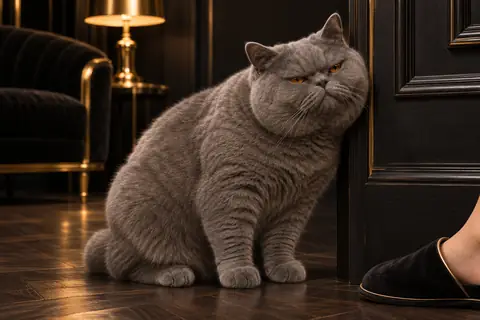

Koci Notatnik / Krótkie opowieści
Kocia komunikacja · 2 min czytaniaOtarłem się o człowieka. Majątek został podpisany.
Człowiek wrócił do domu. Przywitałem go policzkiem, potem podpisałem futrynę i narożnik komody. On uznał, że się stęskniłem. Pozwalam mu zachować tę ładną wersję wydarzeń.

Dlaczego kot ociera się policzkami o człowieka i meble?
Ocierając pyszczek o powierzchnie, kot zostawia swój zapach. Znajomy zapach może pomagać mu czuć się pewniej; znaczenie gestu zależy też od sytuacji.
Akt własności z puszystą pieczątką
— Ale jesteś kochany! — powiedział. Oczywiście. Szczególnie wobec własnego wyposażenia. Nie każdy ma lokaja, którego można przy okazji pogłaskać głową.
Wybrałem go sam. Miał dobre kolana i niepokojącą potrzebę opowiadania mi, jak minął mu dzień. Nikt nie jest idealny. Ubezpieczenia takiego pakietu nie obejmują.
Otarłem policzek o nową torbę. Pachniała obcym światem. Człowiek pomyślał, że ją polubiłem. Ja po prostu wdrożyłem firmową identyfikację zapachową.
Potem zaczął ścierać komodę. Patrzyłem, jak dorosły człowiek usuwa podpis przełożonego, nucąc pod nosem. Trzeba mieć odwagę. Albo bardzo mało informacji.
Przyszedłem jeszcze raz i otarłem się o jego nogę. Westchnął ze wzruszenia. Wznowienie umowy zakończone. Premia dla personelu wypłacona w kontakcie futra.
Co ma zapamiętać Twój człowiek
- Pozwól kotu samemu podejść; nie dociskaj jego głowy do swojej dłoni.
- Patrz na całą postawę ciała i zostaw mu możliwość odejścia.
- Nowe przedmioty udostępniaj spokojnie, bez zmuszania kota do oględzin.